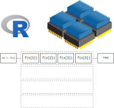
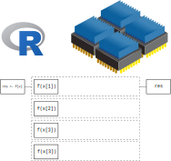
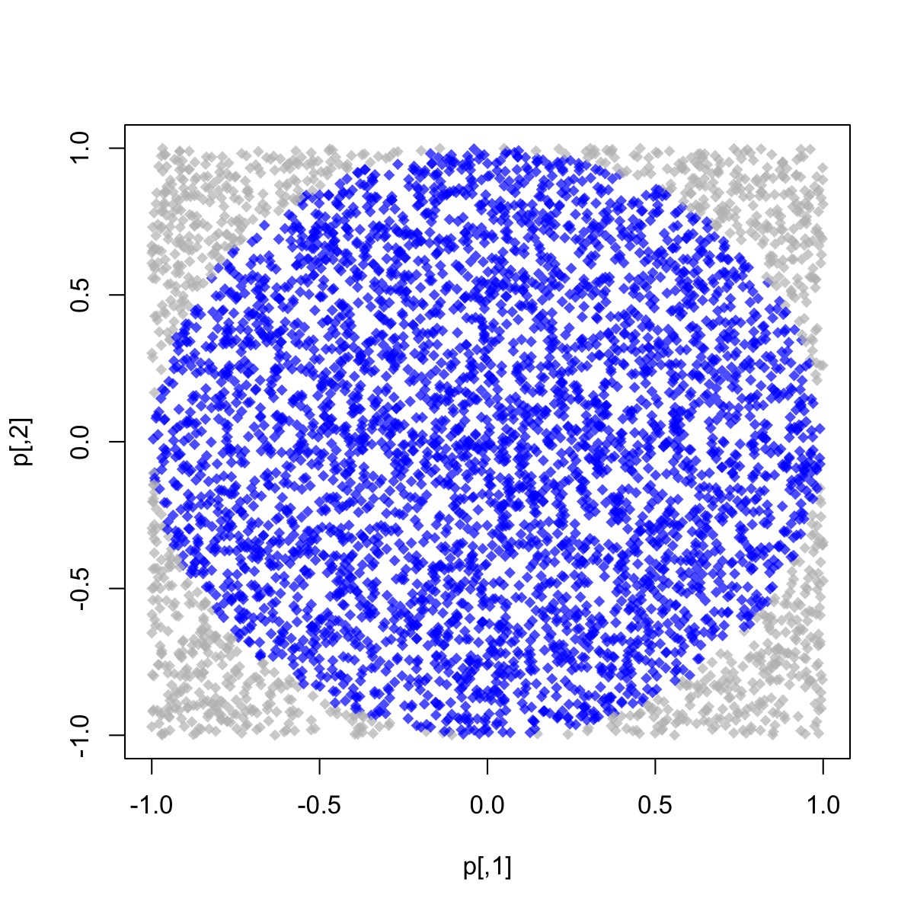

[1] 11A Brief Introduction to High-Performance Computing
With Applications in R
George G. Vega Yon, Ph.D.
University of Utah, EEUU
2024-08-23
Fundamentals

High-Performance Computing: An overview
Loosely, from R’s perspective, we can think of HPC in terms of two, maybe three things:
Big data: How to work with data that doesn’t fit your computer
Parallel computing: How to take advantage of multiple core systems
Compiled code: Write your own low-level code (if R doesn’t has it yet…)
(Checkout CRAN Task View on HPC)
Some vocabulary for HPC
High Throughput Computing Cluster (HTC Cluster)
Supercomputer (HPC Cluster)

Single Instruction, Multiple Data (SIMD)

In terms of scale
HTC > HPC > Single node > Socket > Core > Thread | SIMD vectorization
What’s “a core”?

Source: Original figure from LUMI consortium documentation (LUMI consortium 2023)
How many cores does your computer has?
What is parallel computing?
- Using a single core.
- One element at a time.
- 3 idle cores.

What is parallel computing?
- Using 4 cores.
- 4 elements at a time.
- No idle cores.
- 4 times faster.


When is it a good idea?

Ask yourself these questions before jumping into HPC!
When is it a good idea?
Things that are easily parallelizable:
- Bootstrapping.
- Cross-validation.
- Monte Carlo simulations.
- Multiple MCMC chains.
Things that are not easily parallelizable:
- Regression models.
- Within Chain MCMC.
- Matrix Algebra (generally)1.
- Any sequential algorithm.
Overhead cost
Parallelization is not free: Most cost is in sending+receiving data.
In R (and other flavors), you can mitigate by (i) reducing the amount of data communicated, and (ii) reducing the number of times you communicate.
Overhead cost of parallelization: Fitting \(y = \alpha + \beta_k X_k + \varepsilon,\quad k = 1, \dots\) (more about this later)
Parallel computing in R

Parallel computing in R
While there are several alternatives (just take a look at the High-Performance Computing Task View), we’ll focus on the following R-packages for explicit parallelism
Some examples:
- parallel: R package that provides ‘[s]upport for parallel computation, including random-number generation’.
- foreach: R package for ‘general iteration over elements’ in parallel fashion.
- future: ‘[A] lightweight and unified Future API for sequential and parallel processing of R expression via futures.’
- slurmR: R package for working with the Slurm Workload Manager (by yours truly).
Implicit parallelism, on the other hand, are out-of-the-box tools that allow the programmer not to worry about parallelization, e.g. such as gpuR for Matrix manipulation using GPU, tensorflow
And there’s also a more advanced set of options
- Rcpp + OpenMP: Rcpp is an R package for integrating R with C++, and OpenMP is a library for high-level parallelism for C/C++ and Fortran.
- A ton of other type of resources, notably the tools for working with batch schedulers such as Slurm, HTCondor, etc.
The parallel package
- Explicit parallelism.
- Parallel computing as multiple R sessions.
- Clusters can be made of both local and remote sessions
- Multiple types of cluster:
PSOCK,Fork,MPI, etc.
Parallel workflow
(Usually) We do the following:
- Create a
PSOCK/FORK(or other) cluster usingmakePSOCKCluster/makeForkCluster(ormakeCluster)
Copy/prepare each R session (if you are using a
PSOCKcluster):Copy objects with
clusterExportPass expressions with
clusterEvalQSet a seed
- Do your call:
parApply,parLapply, etc.
- Stop the cluster with
clusterStop
Types of clusters
| Type | Description | Pros | Cons |
|---|---|---|---|
PSOCK |
Multiple machines via socket connection | Works in all OSs | Slowest |
FORK |
Single machine via forking | Avoids memory duplication | Only for Unix-based |
MPI1 |
Multiple machines via Message Passage Interface | Best alternative for HPC clusters | Sometimes hard to setup |
Using PSOCK, the slurmR package creates clusters featuring multiple nodes in HPC environments, think hundreds of cores.
Hands-on

Ex 1: Hello world!
# 1. CREATING A CLUSTER
library(parallel)
cl <- makePSOCKcluster(4)
x <- 20
# 2. PREPARING THE CLUSTER
clusterSetRNGStream(cl, 123) # Equivalent to `set.seed(123)`
clusterExport(cl, "x")
# 3. DO YOUR CALL
clusterEvalQ(cl, {
paste0("Hello from process #", Sys.getpid(), ". x = ", x)
})[[1]]
[1] "Hello from process #71166. x = 20"
[[2]]
[1] "Hello from process #71168. x = 20"
[[3]]
[1] "Hello from process #71167. x = 20"
[[4]]
[1] "Hello from process #71169. x = 20"Ex 2: Regressions
Problem: Run multiple regressions on a very wide dataset. We need to fit the following model:
\[ y = X_i\beta_i + \varepsilon,\quad \varepsilon\sim N(0, \sigma^2_i),\quad\forall i \]
[1] 500 999 x001 x002 x003 x004 x005
1 0.61827227 1.72847041 -1.4810695 -0.2471871 1.4776281
2 0.96777456 -0.19358426 -0.8176465 0.6356714 0.7292221
3 -0.04303734 -0.06692844 0.9048826 -1.9277964 2.2947675
4 0.84237608 -1.13685605 -1.8559158 0.4687967 0.9881953
5 -1.91921443 1.83865873 0.5937039 -0.1410556 0.6507415
6 0.59146153 0.81743419 0.3348553 -1.8771819 0.8181764 num [1:500] -0.8188 -0.5438 1.0209 0.0467 -0.4501 ...Ex 2: Regressions - Serial
Ex 2: Regressions - Parallel
Are we going any faster?
library(microbenchmark)
microbenchmark(
parallel = parallel::parApply(
cl = cl,
X = X, MARGIN = 2,
FUN = \(x, y) coef(lm(y ~ x)),
y = y
),
serial = apply(
X = X, MARGIN = 2,
FUN = \(x, y) coef(lm(y ~ x)),
y = y
),
times = 10,
unit = "relative"
)Unit: relative
expr min lq mean median uq max neval cld
parallel 1.00000 1.000000 1.000000 1.000000 1.0000 1.000000 10 a
serial 2.70971 2.691232 2.640061 2.655794 2.6153 2.448918 10 bEx 3: Bootstrap
Problem: We want to bootstrap a logistic regression model. We need to fit the following model:
\[ P(Y=1) = \text{logit}^{-1}\left(X\beta\right) \]
[1] 100 5 [,1] [,2] [,3] [,4] [,5]
[1,] -0.13592452 1.1921489 -1.04101654 0.26500638 -0.51561099
[2,] -0.04079697 -0.1231379 -0.43190705 1.38694989 0.39568325
[3,] 1.01053901 -0.5741648 -0.77781632 -0.29149014 -0.78301461
[4,] -0.15826244 -1.4903169 0.37368178 -1.83027672 0.88538861
[5,] -2.15663750 2.3638289 0.31256458 -1.62766978 -0.38212891
[6,] 0.49864683 -2.9510362 0.07122864 -0.01630346 0.05333596[1] 1 1 0 0 1 0Ex 3: Bootstrap - Serial
my_boot <- function(y, X, B=1000) {
# Generating the indices
n <- length(y)
indices <- sample.int(n = n, size = n * B, replace = TRUE) |>
matrix(nrow = n)
# Fitting the model
apply(indices, 2, \(i) {
glm(y[i] ~ X[i,], family = binomial("logit")) |>
coef()
}) |> t()
}
set.seed(3312)
ans <- my_boot(y, X, B=50)
head(ans) (Intercept) X[i, ]1 X[i, ]2 X[i, ]3 X[i, ]4 X[i, ]5
[1,] 2.943576 -0.46986617 2.292807 1.1069735 2.117947 0.7839228
[2,] 4.265760 -0.01445575 3.881603 2.5052960 4.300462 0.0542386
[3,] 2.702185 -0.40973910 2.315127 1.1693082 3.059388 0.2927383
[4,] 4.827939 -1.52854114 2.692226 1.7977035 4.370736 0.7825011
[5,] 3.229396 -0.56316370 1.980704 1.4054200 3.949632 0.2806117
[6,] 2.933971 0.25911455 2.193838 0.6953409 1.970649 -0.3528708Ex 3: Bootstrap - Parallel
my_boot_pll <- function(y, X, cl, B=1000) {
# Generating the indices
n <- length(y)
indices <- sample.int(n = n, size = n * B, replace = TRUE) |>
matrix(nrow = n)
# Making sure y and X are available in the cluster
parallel::clusterExport(cl, c("y", "X"))
# Fitting the model
parallel::parApply(cl, indices, 2, \(i) {
glm(y[i] ~ X[i,], family = binomial("logit")) |>
coef()
}) |> t()
}
cl <- parallel::makeForkCluster(4)
set.seed(3312)
ans_pll <- my_boot_pll(y, X, cl, B=50)
head(ans_pll) (Intercept) X[i, ]1 X[i, ]2 X[i, ]3 X[i, ]4 X[i, ]5
[1,] 2.943576 -0.46986617 2.292807 1.1069735 2.117947 0.7839228
[2,] 4.265760 -0.01445575 3.881603 2.5052960 4.300462 0.0542386
[3,] 2.702185 -0.40973910 2.315127 1.1693082 3.059388 0.2927383
[4,] 4.827939 -1.52854114 2.692226 1.7977035 4.370736 0.7825011
[5,] 3.229396 -0.56316370 1.980704 1.4054200 3.949632 0.2806117
[6,] 2.933971 0.25911455 2.193838 0.6953409 1.970649 -0.3528708How much faster?
microbenchmark::microbenchmark(
parallel = my_boot_pll(y, X, cl, B=50),
serial = my_boot(y, X, B=50),
times = 10,
unit = "relative"
)Unit: relative
expr min lq mean median uq max neval cld
parallel 1.000000 1.000000 1.000000 1.000000 1.00000 1.000000 10 a
serial 2.384683 2.166767 2.029347 2.121597 2.55214 1.237447 10 bEx 4: Overhead cost
Problem: Revisit of the overhead cost of parallelization. We want to fit the following model \[y = X_k\beta_k + \varepsilon,\quad k = 1, \dots\]
[,1] [,2] [,3] [,4] [,5]
[1,] 0.9717078 -1.0678781 0.5172875 -1.2556345 -0.6778457
[2,] 1.0155501 -0.4346631 -1.3617543 1.5868240 -0.3758804
[3,] -0.3655489 -0.9227305 -0.1208187 1.0963887 -0.5119787
[4,] 1.0867782 -1.5612666 -1.8576577 0.5026506 -1.8754087[1] 1.2084849 1.3159571 -0.8205109 0.5288260 -0.3503279 1.8586337Ex 4: Overhead cost (cont.)
Naive approach: run regressions and return the full output.
Problem: The
lm()function returns a lot of information. Recovering all that information is costly:
List of 12
$ coefficients : Named num [1:2] 0.00925 -0.01121
..- attr(*, "names")= chr [1:2] "(Intercept)" "X[, 1]"
$ residuals : Named num [1:10000] 1.21 1.318 -0.834 0.532 -0.341 ...
..- attr(*, "names")= chr [1:10000] "1" "2" "3" "4" ...
$ effects : Named num [1:10000] -0.921 1.125 -0.841 0.506 -0.374 ...
..- attr(*, "names")= chr [1:10000] "(Intercept)" "X[, 1]" "" "" ...
$ rank : int 2
$ fitted.values: Named num [1:10000] -0.00164 -0.00213 0.01335 -0.00293 -0.00931 ...
..- attr(*, "names")= chr [1:10000] "1" "2" "3" "4" ...
$ assign : int [1:2] 0 1
$ qr :List of 5
..$ qr : num [1:10000, 1:2] -1e+02 1e-02 1e-02 1e-02 1e-02 1e-02 1e-02 1e-02 1e-02 1e-02 ...
.. ..- attr(*, "dimnames")=List of 2
.. .. ..$ : chr [1:10000] "1" "2" "3" "4" ...
.. .. ..$ : chr [1:2] "(Intercept)" "X[, 1]"
.. ..- attr(*, "assign")= int [1:2] 0 1
..$ qraux: num [1:2] 1.01 1.01
..$ pivot: int [1:2] 1 2
..$ tol : num 1e-07
..$ rank : int 2
..- attr(*, "class")= chr "qr"
$ df.residual : int 9998
$ xlevels : Named list()
$ call : language lm(formula = y ~ X[, 1])
$ terms :Classes 'terms', 'formula' language y ~ X[, 1]
.. ..- attr(*, "variables")= language list(y, X[, 1])
.. ..- attr(*, "factors")= int [1:2, 1] 0 1
.. .. ..- attr(*, "dimnames")=List of 2
.. .. .. ..$ : chr [1:2] "y" "X[, 1]"
.. .. .. ..$ : chr "X[, 1]"
.. ..- attr(*, "term.labels")= chr "X[, 1]"
.. ..- attr(*, "order")= int 1
.. ..- attr(*, "intercept")= int 1
.. ..- attr(*, "response")= int 1
.. ..- attr(*, ".Environment")=<environment: R_GlobalEnv>
.. ..- attr(*, "predvars")= language list(y, X[, 1])
.. ..- attr(*, "dataClasses")= Named chr [1:2] "numeric" "numeric"
.. .. ..- attr(*, "names")= chr [1:2] "y" "X[, 1]"
$ model :'data.frame': 10000 obs. of 2 variables:
..$ y : num [1:10000] 1.208 1.316 -0.821 0.529 -0.35 ...
..$ X[, 1]: num [1:10000] 0.972 1.016 -0.366 1.087 1.656 ...
..- attr(*, "terms")=Classes 'terms', 'formula' language y ~ X[, 1]
.. .. ..- attr(*, "variables")= language list(y, X[, 1])
.. .. ..- attr(*, "factors")= int [1:2, 1] 0 1
.. .. .. ..- attr(*, "dimnames")=List of 2
.. .. .. .. ..$ : chr [1:2] "y" "X[, 1]"
.. .. .. .. ..$ : chr "X[, 1]"
.. .. ..- attr(*, "term.labels")= chr "X[, 1]"
.. .. ..- attr(*, "order")= int 1
.. .. ..- attr(*, "intercept")= int 1
.. .. ..- attr(*, "response")= int 1
.. .. ..- attr(*, ".Environment")=<environment: R_GlobalEnv>
.. .. ..- attr(*, "predvars")= language list(y, X[, 1])
.. .. ..- attr(*, "dataClasses")= Named chr [1:2] "numeric" "numeric"
.. .. .. ..- attr(*, "names")= chr [1:2] "y" "X[, 1]"
- attr(*, "class")= chr "lm"Ex 4: Overhead cost - Implementation
Let’s compare the cost of getting only the coefficients and minimizing copy via forking:
library(parallel)
cl <- makePSOCKcluster(4)
# Running the benchmark
cost_serial <- system.time(apply(X, 2, \(x, y) lm(y ~ x), y = y))
cost_pll <- system.time(parApply(cl, X, 2, \(x, y) lm(y ~ x), y = y))
cost_pll_coef <- system.time(parApply(cl, X, 2, \(x, y) coef(lm(y ~ x)), y = y))
# Stopping the cluster
stopCluster(cl)
cost_pll_fork <- system.time({
mclapply(1:ncol(X), \(j) coef(lm(y ~ X[,j])), mc.cores = 4)
})| Type | Serial | Parallel | Parallel (coef only) | Parallel fork (coef only) |
| Elapsed | 2.638 | 6.215 | 1.157 | 0.666 |

Thanks!
gvegayon
ggvy.cl
george.vegayon@utah.edu
See also
- Package parallel
- Using the iterators package
- Using the foreach package
- 32 OpenMP traps for C++ developers
- The OpenMP API specification for parallel programming
- ‘openmp’ tag in Rcpp gallery
- OpenMP tutorials and articles
For more, checkout the CRAN Task View on HPC
Bonus track: Simulating \(\pi\)
We know that \(\pi = \frac{A}{r^2}\). We approximate it by randomly adding points \(x\) to a square of size 2 centered at the origin.
So, we approximate \(\pi\) as \(\Pr\{\|x\| \leq 1\}\times 2^2\)

The R code to do this
library(parallel)
# Setup
cl <- makePSOCKcluster(4L)
clusterSetRNGStream(cl, 123)
# Number of simulations we want each time to run
nsim <- 1e5
# We need to make -nsim- and -pisim- available to the
# cluster
clusterExport(cl, c("nsim", "pisim"))
# Benchmarking: parSapply and sapply will run this simulation
# a hundred times each, so at the end we have 1e5*100 points
# to approximate pi
microbenchmark::microbenchmark(
parallel = parSapply(cl, 1:100, pisim, nsim=nsim),
serial = sapply(1:100, pisim, nsim=nsim),
times = 10,
unit = "relative"
)Unit: relative
expr min lq mean median uq max neval cld
parallel 1.000000 1.0000 1.00000 1.000000 1.000000 1.000000 10 a
serial 1.867702 1.8882 1.98731 1.907443 2.290021 2.120476 10 bSession info
R version 4.4.1 (2024-06-14)
Platform: aarch64-apple-darwin23.4.0
Running under: macOS Sonoma 14.6.1
Matrix products: default
BLAS: /opt/homebrew/Cellar/openblas/0.3.27/lib/libopenblasp-r0.3.27.dylib
LAPACK: /opt/homebrew/Cellar/r/4.4.1/lib/R/lib/libRlapack.dylib; LAPACK version 3.12.0
locale:
[1] en_US.UTF-8/en_US.UTF-8/en_US.UTF-8/C/en_US.UTF-8/en_US.UTF-8
time zone: America/Denver
tzcode source: internal
attached base packages:
[1] parallel stats graphics grDevices utils datasets methods
[8] base
other attached packages:
[1] microbenchmark_1.4.10
loaded via a namespace (and not attached):
[1] digest_0.6.36 codetools_0.2-20 multcomp_1.4-25 fastmap_1.2.0
[5] Matrix_1.7-0 xfun_0.45 lattice_0.22-6 TH.data_1.1-2
[9] splines_4.4.1 zoo_1.8-12 knitr_1.47 htmltools_0.5.8.1
[13] rmarkdown_2.27 mvtnorm_1.2-5 cli_3.6.3 grid_4.4.1
[17] sandwich_3.1-0 compiler_4.4.1 tools_4.4.1 evaluate_0.24.0
[21] survival_3.6-4 yaml_2.3.8 rlang_1.1.4 jsonlite_1.8.8
[25] MASS_7.3-60.2 References
LUMI consortium. 2023. “Documentation - Distribution and Binding.” https://docs.lumi-supercomputer.eu/runjobs/scheduled-jobs/distribution-binding/.